本章では実際にウェブサイトを作りながら、HTMLとCSSに関して学習していきます。
前章で学習したHTMLとCSSの概要を思い出しながら、実践的なスキルを磨いていきましょう。
はじめに、今回皆さんに作っていただくウェブサイトの完成形を紹介します。続いて、こちらで用意したhtmlファイルとcssファイルをダウンロードして、そのファイルで作業を進めます。
ウェブサイトを進めていく上で必要なhtmlとcssの知識はその都度必要なときに紹介して、実際に手を動かしながらウェブサイトを作っていきます。
ひとつひとつその場で覚える必要はありません。htmlの要素やcssのプロパティは調べればすぐ見つかるため、ここでは無理に覚えず、実際にウェブサイトを作る流れを理解することに注力してください。
HTML/CSSは実践が全てです。そのため、本章では実際に皆さんに手を動かしながらウェブサイト作っていただきます。また、次章も実践形式でブログのマークアップとコーディングを行っていただきます。
今回皆さんには課題として「Hair OLIVE」という美容サロンのウェブサイトを作っていただきます。
先に完成形をお見せしておきます。
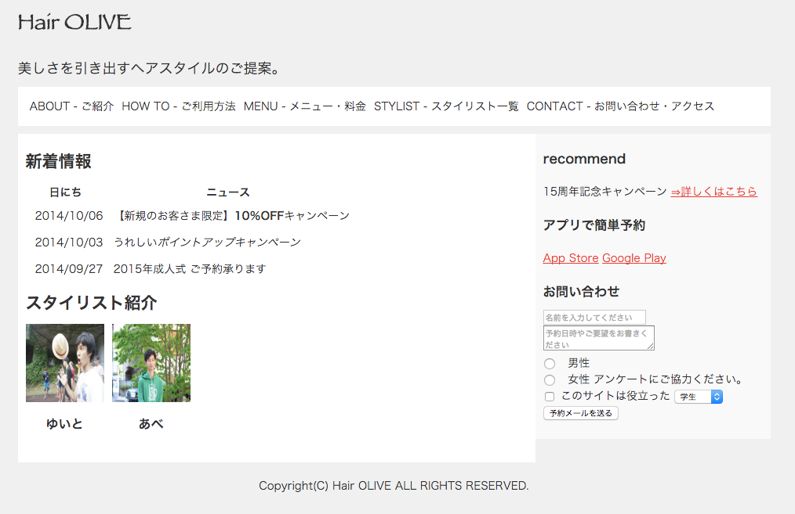
まずは、HTML、CSSを記入するファイルと、それを保管しておくためのディレクトリを作っていきましょう。
index.htmlとstyle.cssというファイルを作成してください。「hair-olive」ディレクトリは、デスクトップに作成すると良いでしょう。ディレクトリを作成する方法は色々ありますが、ここではFinderから「新規フォルダを作成」を選びましょう。
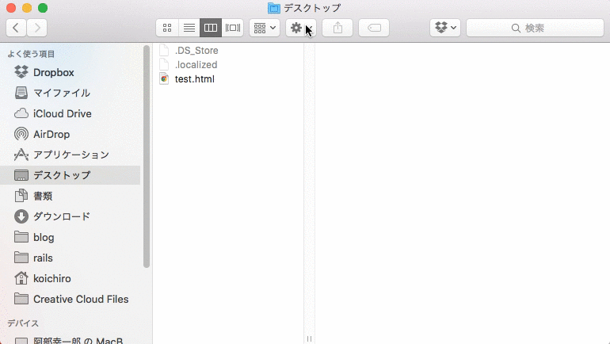
続いて、ファイルに基本となる記述をします。また、作成したstyle.cssをindex.htmlが読み込めるようにしましょう。linkタグを利用すれば良いのでしたね。
1 2 3 4 5 6 7 8 9 |
<html>
<head>
<meta charset="UTF-8" />
<link rel="stylesheet" href="style.css">
<title>Hair OLIVE</title>
</head>
<body>
</body>
</html>
|
1 2 3 4 5 6 7 8 9 10 |
body {
background-color: #f0f0f0;
font-size: 14px;
color: #333;
margin: 0 auto;
}
h1,h2,h3,h4,h5,h6,p {
padding: 10px 0;
margin: 0;
}
|
style.cssに書き込んだのは、ブラウザがデフォルトでもつCSSをリセットするためのCSSです。
インターネットを閲覧するためのブラウザにはいくつかの種類がありますが、それぞれ独自のCSSを持っています。何らかのトラブルで、Webページ作成者が用意したCSSファイルが読み込まれなかった時、ブラウザ側で最低限の見た目を保障するためです。
しかし、これが時に、Webページ作成者が用意したCSSファイルと影響しあって見た目を崩してしまうことがあります。これを防ぐために通常、各ブラウザが用意しているデフォルトのCSSを上書きするCSSを書いておきます。これをリセットCSSと呼びます。
これで準備が整いました。それでは実際にウェブサイトを作っていきましょう。
ウェブサイトを作るときは、まず大枠のブロック構成（＝レイアウト）を考えることから始めます。
下の画像で言うところの紫と緑の線のところですね。
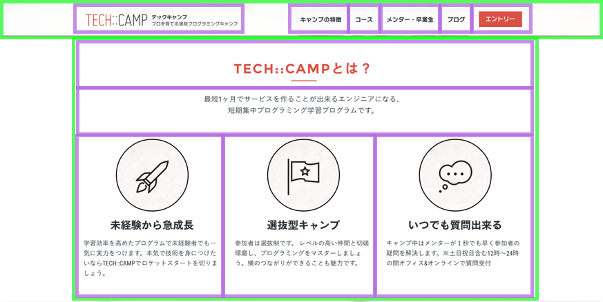
前章で習ったhtml、CSSのコツである、
1. HTMLとは左上に重力のある積み木である
2. 積み木の一つ一つは中身によって大きさの変わる箱であり、入れ子構造になっている
を思い出しながらいきましょう。
まずは前章で習ったhtml、head、body要素を思い出しましょう。前提として全てのウェブページはhtml要素という大枠の中に入っています。そしてその中にサイトの情報を示すhead要素、実際に表示させる文字を記述するbody要素があります。
1 2 3 4 5 6 7 8 9 |
<html>
<head>
<meta charset="UTF-8" />
<link rel="stylesheet" href="styleindex2.css">
<title>Hair OLIVE</title>
</head>
<body>
</body>
</html>
|
ここまでは皆さん既に完了しているので問題ありません。
では次に実際にウェブサイトに表示させるものを記述していくbody要素の中の大まかなレイアウトを考えていきましょう。
今回作るHAIR OLIVEのウェブサイトのbody要素の中のレイアウトは、
1. タイトルやナビゲーションバーを含むヘッダー
2. 主要な情報を記載するコンテンツ
3. コピーライトなどの情報を載せるフッター
の3つです。
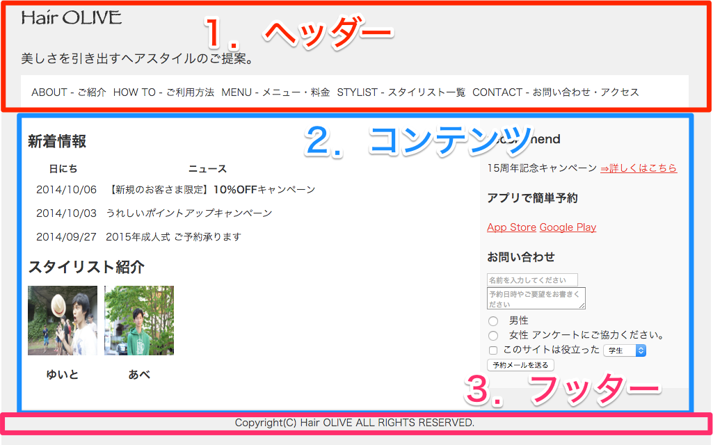
続いてより詳しいレイアウトを見ていきましょう。
よく見るとヘッダーはタイトルとサロンの説明文の部分と、その下の白いナビゲーションバーとで分かれていますね。さらにコンテンツの中も左の白いブロック要素と右の灰色のブロック要素に分かれています。
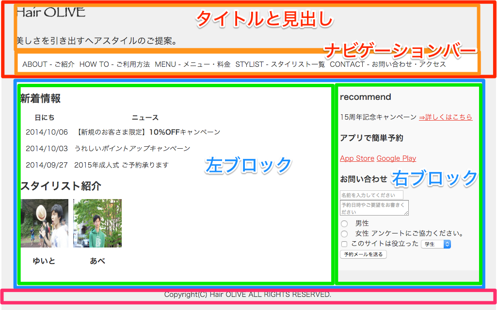
以上が今回作るウェブサイトの大枠のレイアウトです。
それでは上記のレイアウト構成を考えた上で、実際に大枠のレイアウトの中のひとつひとつのブロック要素を作っていきましょう。
htmlとbody要素の記述はもう済ませてあるので、ここではヘッダーやコンテンツ、フッターなどの一番大きな枠組から作っていきます。
まずヘッダーとフッターから作っていきます。ヘッダーはheader要素、フッターはfooter要素というブロック要素を使って作ります。
上部にあるものを示すことができます。
前章で紹介したhead要素と混同しがちなので気をつけてください。
例えば、見出しやナビゲーションなどを囲うことによって、上部にあることがHTMLだけでわかるようになります。
header要素は、ブロック要素となります。
下部にあるものを示すことができます。
例えば、コメント数やコピーライトを囲うことによって、下部にあることがHTMLだけでわかるようになります。
footer要素は、ブロック要素となります。
header要素とfooter要素を使ってヘッダーとフッターを作りましょう。
1 2 3 4 5 6 7 |
<body>
<header>
</header>
<footer>
</footer>
</body>
|
続いて、サイトの詳細な情報を載せているコンテンツを作っていきましょう。
コンテンツに限らず、htmlを書くときに何か情報をひとまとめにして管理をしたい時は、前章で習ったdiv要素を使用します。
div要素は、「特定の意味が無い」ブロック要素です。汎用的に様々な用途で使うことができます。レイアウトを作成する際に重宝されます。div要素を使って複数の要素をひとかたまりで管理することで、cssでのデザイン適用やブロック要素の配置を簡単に行えるようになります。
8 9 10 11 12 13 14 15 16 17 |
<body>
<header>
</header>
<div class="contents">
</div>
<footer>
</footer>
</body>
|
後々デザインを加えていきますのでここで前章で習ったclassを当てておきましょう。先にクラスをつけるとどのdiv要素がどのような役割を果たすのかイメージしやすくなります。
これで一番大枠のブロック要素は作成することができました。
しかし、このブロック要素はまだ大きさを設定していません。中にある文字もないので、現状では何も表示されません。なので、次は大枠のブロック要素の大きさや色を決めていきましょう。
先ほど作ったヘッダーやフッター、コンテンツなどにに大きさや色をつけていきましょう。
ブロック要素はデフォルトで横幅が親要素いっぱいに広がっています。しかしまだ高さを設定していないため、表示はされません。
そのため、高さや横幅をcssのプロパティを指定しながら決めていく必要があります。高さや横幅を決めるプロパティはheightプロパティとwidthプロパティです。
要素の高さを指定するプロパティです。数値は、px/pt/em/%などを指定します。
要素の幅を指定するプロパティです。数値は、px/pt/em/%などを指定します。
※プロパティなどのデザインに関する記述はcssファイルに書き込みます。style.cssを開きましょう
12 13 14 15 16 17 18 19 20 21 22 23 |
header {
height: 150px;
}
.contents {
height: 400px;
width: 960px;
}
footer {
height: 50px;
}
|
ヘッダーとフッターの横幅は親要素であるbodyの横幅の分まで広がってほしいので今回はwidthプロパティを指定しません。
さて、これでブロック要素の大きさを指定できたのですが、まだ色を指定していないですね。ブロック要素のデフォルトの背景色は親要素の色と同じになるので、今のままだと背景色と同化してしまって、まだ見えません。
背景色を決めるためにはbackground-colorプロパティを使います。
要素の背景色を指定するプロパティです。代表的な色は"red"や"blue"などの文字で示すことができますが、"#fff"などのcssのカラーコードで指定することもできます。
※ここでは見やすくするため、完成形とは違う色を使っています。
12 13 14 15 16 17 18 19 20 21 22 23 24 25 26 |
header {
background-color: gray;
height: 150px;
}
.contents {
height: 400px;
width: 960px;
background-color: #C0C0C0;
}
footer {
background: gray;
height:50px;
}
|
できたらindex.htmlをfinderからgoogle chromeにドラック＆ドロップして開き、ここまでの成果を確認しましょう。
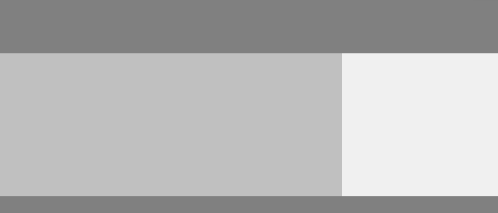
こんな感じになっているはずです。
見にくいのでわかりやすくすると。。。
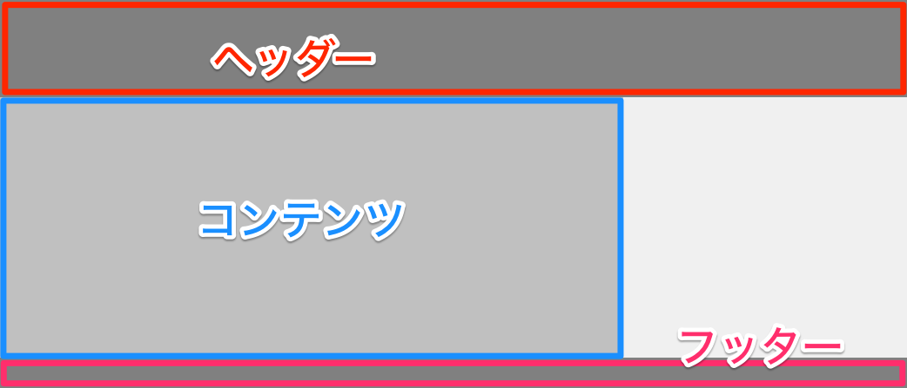
こんな感じになっています。コンテンツが左に寄ってしまっていて、少し配置が違いますが、今はこれで大丈夫です。
次は、ヘッダーやコンテンツの中のブロック要素もdiv要素で作っていきましょう。
まずはdiv要素を使って、親要素（ヘッダーやコンテンツ）の中に子要素（ナビゲーションバーなど）を作っていきます
7 8 9 10 11 12 13 14 15 16 17 18 19 20 21 22 23 24 25 26 |
<body>
<header>
<div class="heading">
</div>
<div class="navbar">
</div>
</header>
<div class="contents">
<div class="left-content">
</div>
<div class="right-content">
</div>
</div>
<footer>
</footer>
</body>
|
ヘッダーとコンテンツの中にひとかたまりのブロック要素を2つずつつくりました。タイトルや見出しなどの情報をひとかたまりのブロック要素として管理するためです。
ブロック要素を作ったら、次は大きさや色を決めていきましょう。
12 13 14 15 16 17 18 19 20 21 22 23 24 25 26 27 28 29 30 31 32 33 34 35 36 37 38 39 40 41 42 43 44 45 46 47 48 |
header {
background-color: gray;
}
.heading {
height: 100px;
width: 960px;
background-color: #CCCCCC;
}
.navbar {
height: 50px;
width: 960px;
background-color: #A9A9A9;
}
.contents {
background-color: #C0C0C0;
width: 960px;
}
.left-content {
height: 400px;
width: 640px;
background-color: white;
}
.right-content {
height: 370px;
width: 320px;
background-color: #f9f9f9;
}
footer {
background: gray;
height:50px;
}
|
ブロック要素は幅も大きさも指定がなければ子要素の分だけ広がります。
今回、contentsやheaderの高さは中に入っている子要素の高さ分広がってほしいので、heightプロパティの指定を消しています。
一回確認してみましょう。このような形になります。
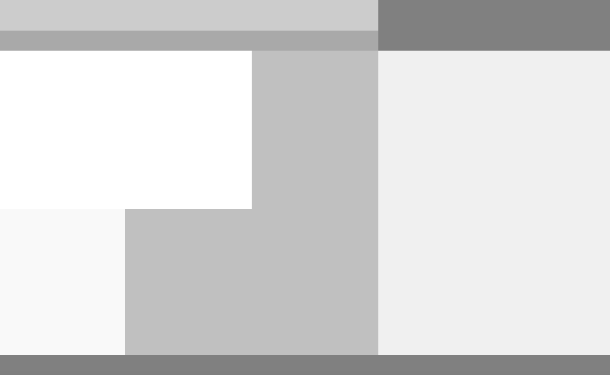
見やすくすると、
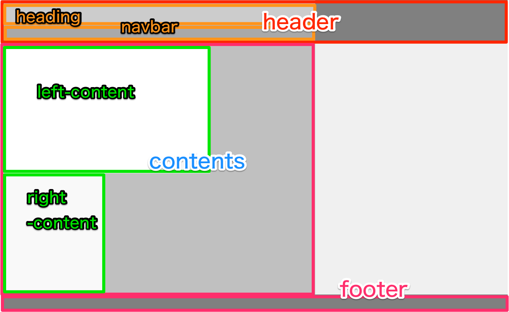
こうなります。まだまだ完成形とはほど遠いです。一番の問題はやはり、ブロック要素の配置の問題ですね。contentsやheadingが中央に来ていなかったり、right-contentがleft-contentの右に来ていなかったりしています。
なので、次はブロック要素の配置の仕方を学んでいきましょう。
先ほどまではブロック要素の大きさや背景色を決めていました。次はブロック要素の配置を決めていきましょう。
まずはleft-contentの下に来てしまっているright-contentをleft-contentの右に置くようにします。
この場合left-contentとright-contentは横並びしていますね。
横並びをさせるときはfloatプロパティを使用します。
指定された要素を左または右に寄せて配置する際に使用します。 後に続く内容は、その反対側に回り込みます。
33 34 35 36 37 38 39 40 41 42 43 44 45 |
.left-content {
height: 400px;
width: 640px;
background-color: white;
float: left;
}
.right-content {
height: 370px;
width: 320px;
background-color: #f9f9f9;
float: left;
}
|
一回確認してみましょう。
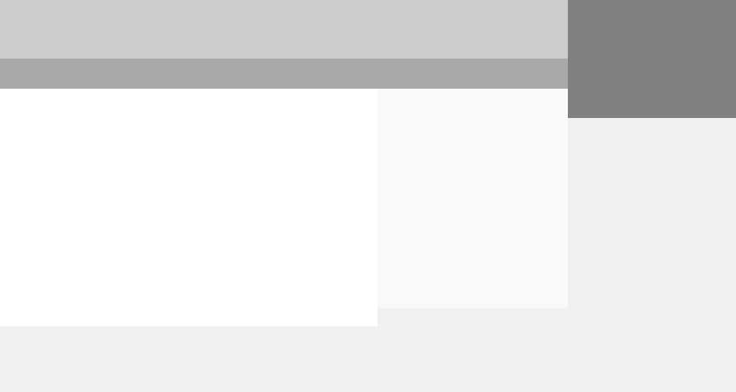
あれ、left-contentとright-contentを横並びさせることはできましたが、footerがどこか行ってしまいましたね。
詳しく見ていきましょう。
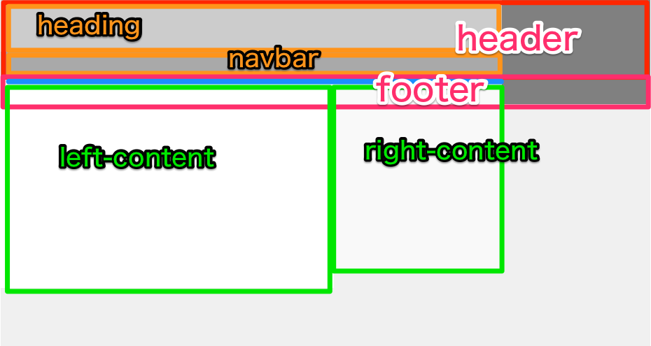
contentsが消えて、footerが上に上がってしまっていますね。
なぜ、floatプロパティを利用したことによりこのようなことが起きてしまったのでしょうか？
floatプロパティを使うと、後に続く要素まで横に並ぼうとが回りこみをしてしまい想定通りの表示になりません。
例えば、以下のような要素の配置を行っていたとします。
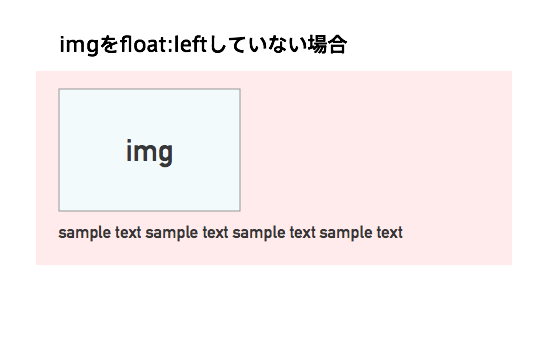
赤いボックスの中に、文章と画像があります。
画像の下には、文章が表示されています。
htmlは以下のようになっています。
1 2 3 4 5 6 7 8 9 10 11 12 13 14 15 16 |
<!DOCTYPE HTML>
<html>
<head>
<meta charset="UTF-8" />
<title></title>
<link rel="stylesheet" href="style.css">
</head>
<body>
<div class="box1">
<img src="hoge.jpg">
<p>
sample text sample text sample text
</p>
</div>
</body>
</html>
|
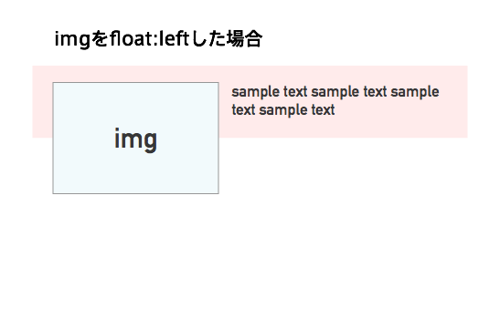
下にあった文章が、画像の右側に移動しました。
しかし、赤いボックスの高さが、右の文章の分だけになってしまっています。
なぜ、このような表示になってしまったのでしょう。
これはfloatプロパティの性質によるもので、floatプロパティは左右に要素を回りこませるだけではなく、言葉の意味通りにfloatをかけた要素(今回の例ではimg)を浮いている状態にしてしまいます。
子要素であるimgが浮いている状態だと、親要素である赤いボックスはimgの高さを認識することができなくなってしまいます。
ここで一つおさらいをしましょう。ブロック要素の高さと横幅は、デフォルト(何も指定しない状態)では以下のようになります。
赤いボックスが文章の高さになってしまった流れ
この問題はfloatを使うとたびたび起きてしまうので、clearfixを使い解決しましょう。
floatによって起こる上記のような問題を回避するために
、clearfixというやり方が一般的に使われています。
これは、擬似要素の :after を使ったものです。:afterは、ボックス内の末尾に新たなインラインボックスを作ることができます。:afterで作った新たなインラインボックスに対して、clear: both（回りこみ解除）とdisplay: block（ブロック要素）を指定することによって、回り込みを解除します。
clearプロパティは、floatによって無くなる要素の高さを正常に戻してくれるプロパティです。手前の要素をfloatしたあと、floatによって回り込ませたくない要素に対して使います。
値は both とすることが多いです。
displayプロパティは、要素の種類(ブロック要素、インライン要素)を変更することができるプロパティです。値には、変更したい要素の種類を取ります。
以下は、clearfixに関する説明の動画になります。これまでの説明をまとめてわかりやすく解説しているので、是非御覧ください。
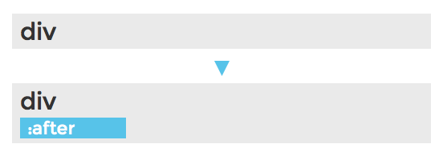
一番下の行に下記のCSSを追加してみましょう。
1 2 3 4 5 |
.clearfix:after {
content: "";
clear: both;
display: block;
}
|
回りこみを解除したい要素に対して、clearfixというclassをつけます。
16 17 18 19 20 21 22 23 24 |
<div class="contents">
<div class="clearfix">
<div class="left-content">
</div>
<div class="right-content">
</div>
</div>
</div>
|
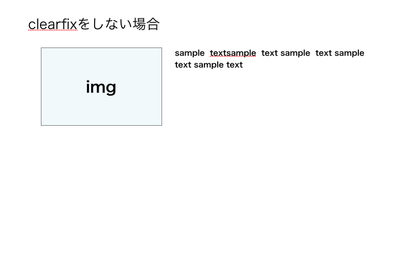
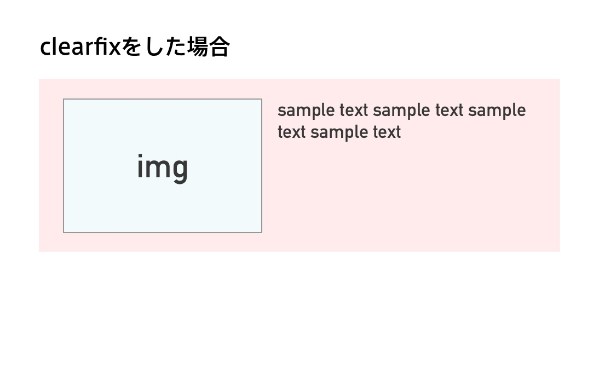
さきほどのfooterが上に行ってしまったり、contentsの高さが0になってしまった現象はfloatプロパティによって、left-contentとright-contentの高さが認知されなくなってしまったから起きてしまったということになりますね。
さて、これでfloatプロパティを使用したことによる副作用を克服することができました。
一度、確認してみましょう。
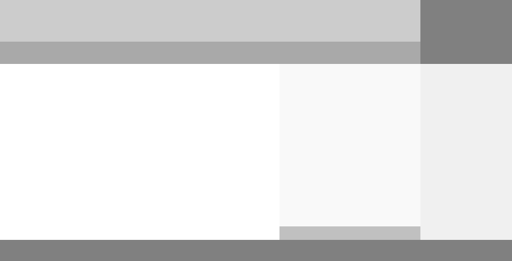
見やすくすると、
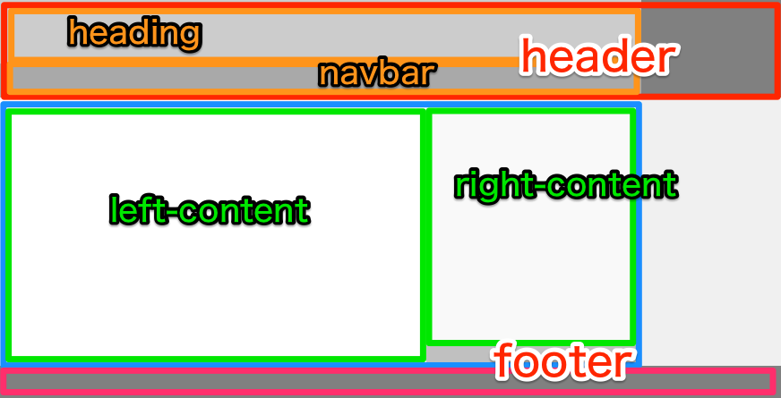
これでleft-contentとright-contentを横並びにさせることができました。
次は各ブロック要素の細かい配置を変えていきましょう。
ここまで、ブロック要素を横並びにするなどのレイアウトの方法を学んできました。続いて、ブロック要素とブロック要素のあいだに幅をとる方法などを学んでいきましょう。
繰り返しになりますが、HTML/CSSではすべての要素を箱として考えます。
このことをCSSのボックスモデルと言います。
ボックスは以下の図のような、「content」、枠をつける「border」と、内側の余白「padding」、外側の余白「margin」から成り立っています。
それぞれ、上下左右の４辺に分けることができ、個別にCSSを適用し、幅や色などを指定できます。
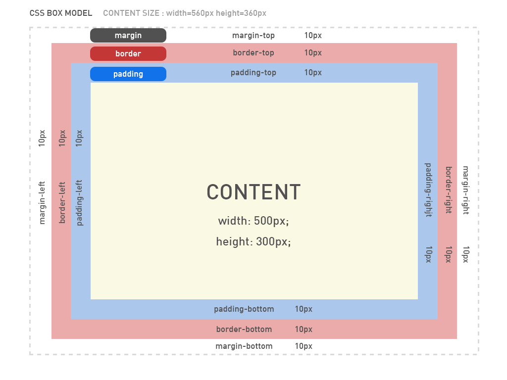
箱の外側に余白を取ります。指定方法は、pxになります。
ブロック様子の細かい配置を変えるにはmarginプロパティを使います。
指定方法は以下のとおりです。
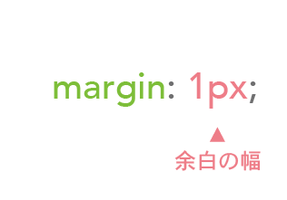
上下左右全ての方向に同じ幅の余白を指定する場合は値を１つ指定すれば良いですが、方向によって余白の幅を分けたい場合は以下のように指定することができます。
| 指定方法 | 説明 |
|---|---|
| margin: 1px; | [上下左右]の余白をまとめて1pxに指定 |
| margin: 1px 1px; | [上下][左右]の余白をそれぞれ1pxに指定 |
| margin: 1px 1px 1px; | [上][左右][下]の余白をそれぞれ1pxに指定 |
| margin: 1px 1px 1px 1px; | [上][右][下][左]の余白をそれぞれ1pxに指定 |
箱の内側に余白を取ります。指定方法はmarginと同様pxになります。また、上下左右への指定の仕方もmarginと同じです。
| 指定方法 | 説明 |
|---|---|
| padding: 1px; | [上下左右]の内側の余白をまとめて1pxに指定 |
| padding: 1px 1px; | [上下][左右]の内側の余白をそれぞれ1pxに指定 |
| padding: 1px 1px 1px; | [上][左右][下]の内側の余白をそれぞれ1pxに指定 |
| padding: 1px 1px 1px 1px; | [上][右][下][左]の内側の余白をそれぞれ1pxに指定 |
箱の境界線の幅や色を変更できます。
注意したいのが、箱の幅、高さと、「border」「padding」「margin」を併用する場合です。この場合、幅や高さの値に加え、「border」「padding」「margin」で指定した値もプラスされます。
なので、例えばwidth: 500px; と padding: 20px; のように指定した場合、幅は500px+左右のpaddingの合計40pxが増え、540pxとなります。
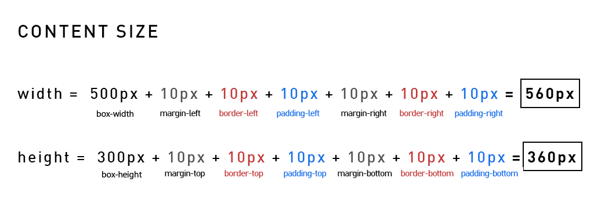
margin, padding共に要素間の幅を取るためのプロパティです。では、この2つはどのように使い分けるのでしょうか。
端的に言えば、以下の図のように要素の背景色を含めて幅を取りたいときはpadding, 背景色を含めたくない場合はmarginを利用します。
以下の図では、「sample」というテキストがコンテンツにあたります。
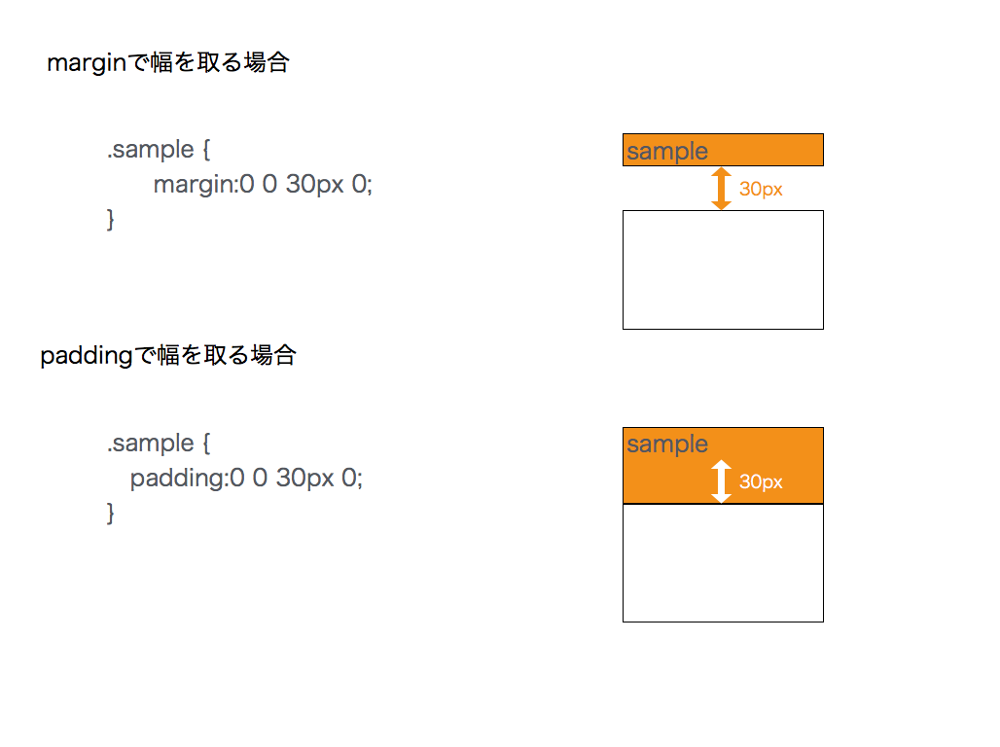
どんなデザインにしたいかによって、使い分けることになります。
完成版と比べると、要素が全体的に左によっています。これを中央に寄せるためには、marginプロパティを利用します。
marginプロパティで、左右の値をautoに指定することで、ブロック要素を中央に配置することができます。
| 指定方法 | 説明 |
|---|---|
| margin: 0 auto; | [左右]に対して中央に配置 |
margin: 0 auto;はとても良く使うので覚えておきましょう。
17 18 19 20 21 22 23 24 25 26 27 28 29 30 31 32 33 34 35 |
.heading {
height: 100px;
width: 960px;
background-color: #CCCCCC;
margin: 0 auto;
}
.navbar {
height: 50px;
width: 960px;
background-color: #A9A9A9;
margin: 0 auto;
}
.contents {
width: 960px;
background-color: #C0C0C0;
margin: 10px auto;
}
|
では、確認しましょう。
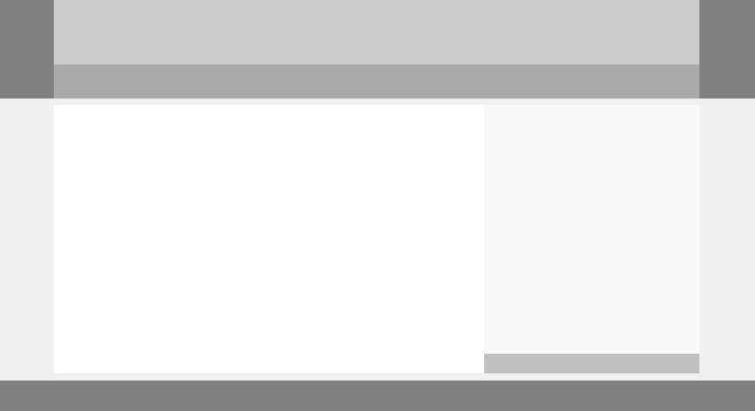
このような感じになっていれば大丈夫です。少しわかりやすくすると、
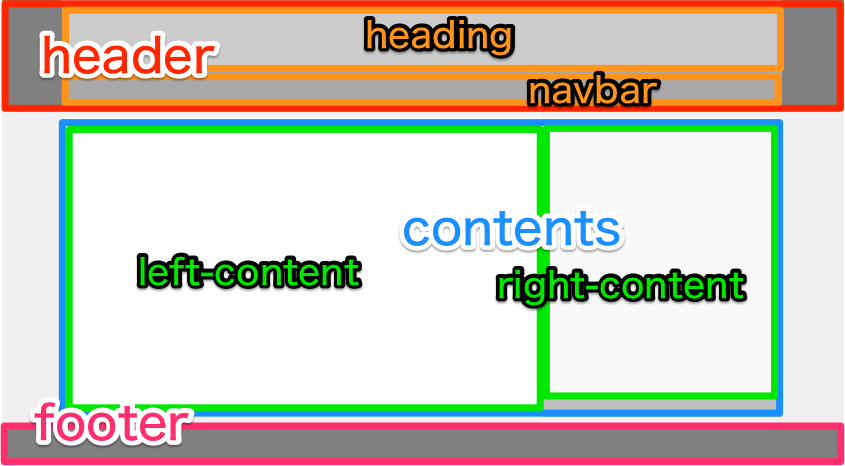
これで大枠のレイアウトが作り終えました。次の章では実際にブロック要素の中身を色々な要素やプロパティを使いながら作っていきます。
お疲れ様でした！このカリキュラムの終わりに確認問題を解きましょう。
テストを受けた回数：1回
最高得点：80点
合否：合格
 大宅 誠人
大宅 誠人